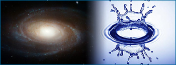
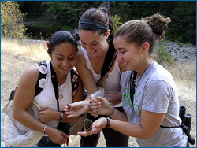

"Eureka!" or "aha!" moments may not happen frequently, but they are often experiences that drive science and scientists. For a scientist, every day holds the possibility of discovery - of coming up with a brand new idea or of observing something that no one has ever seen before. Vast bodies of knowledge have yet to be built and many of the most basic questions about the universe have yet to be answered:
- What causes gravity?
- How do tectonic plates move around on Earth's surface?
- How do our brains store memories?
- How do water molecules interact with each other?
We don't know the complete answers to these and an overwhelming number of other questions, but the prospect of answering them beckons science forward.
EVERYDAY SCIENCE QUESTIONS
Scientific questions can seem complex (e.g., what chemical reactions allow cells to break the bonds in sugar molecules), but they don't have to be. You've probably posed many perfectly valid scientific questions yourself: how can airplanes fly, why do cakes rise in the oven, why do apples turn brown once they're cut? You can discover the answers to many of these "everyday" science questions in your local library, but for others, science may not have the answers yet, and answering such questions can lead to astonishing new discoveries. For example, we still don't know much about how your brain remembers to buy milk at the grocery store. Just as we're motivated to answer questions about our everyday experiences, scientists confront such questions at all scales, including questions about the very nature of the universe.
Discoveries, new questions, and new ideas are what keep scientists going and awake at night, but they are only one part of the picture; the rest involves a lot of hard (and sometimes tedious) work. In science, discoveries and ideas must be verified by multiple lines of evidence and then integrated into the rest of science, a process which can take many years. And often, discoveries are not bolts from the blue. A discovery may itself be the result of many years of work on a particular problem, as illustrated by Henrietta Leavitt's stellar discovery...
STELLAR SURPRISES
Henrietta Leavitt
Astronomers had long known about the existence of variable stars - stars whose brightness changes over time, slowly shifting between brilliant and dim - when, in 1912, Henrietta Leavitt announced a remarkable (and totally unanticipated) discovery about them. For these stars, the length of time between their brightest and dimmest points seemed to be related to their overall brightness: slower cycling stars are more luminous. At the time, no one knew why that was the case, but nevertheless, the discovery allowed astronomers to infer the distances to far-off stars, and hence, to figure out the size of our own galaxy. Leavitt's observation was a true surprise - a discovery in the classic sense - but one that came only after she'd spent years carefully comparing thousands of photos of these specks of light, looking for patterns in the darkness.
The process of scientific discovery is not limited to professional scientists working in labs. The everyday experience of deducing that your car won't start because of a bad fuel pump, or of figuring out that the centipedes in your backyard prefer shady rocks shares fundamental similarities with classically scientific discoveries like working out DNA's double helix. These activities all involve making observations and analyzing evidence - and they all provide the satisfaction of finding an answer that makes sense of all the facts. In fact, some psychologists argue that the way individual humans learn (especially as children) bears a lot of similarity to the progress of science: both involve making observations, considering evidence, testing ideas, and holding on to those that work.